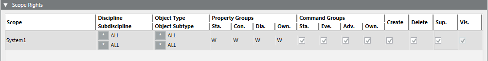
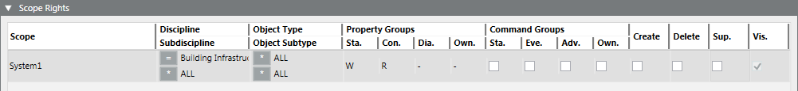
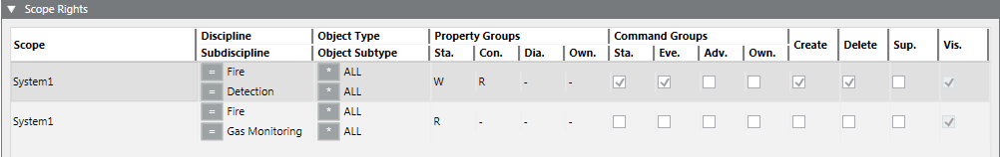
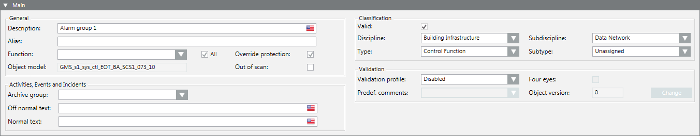
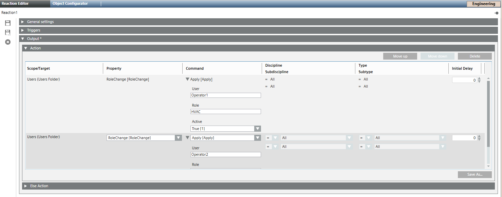
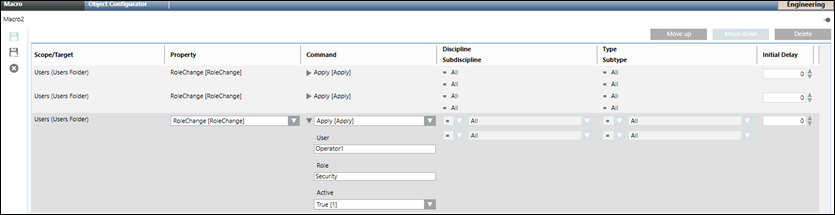
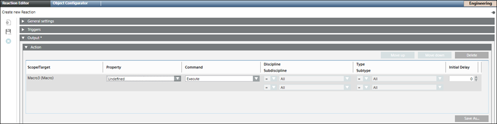

Additional User Group Administration Procedures
Prerequisites
- System Manager is in Engineering mode.
- System Browser is in Management View.
- Project > System Settings > Security is selected.
- The Security tab is selected.
Remove a User from a User Group
- Select the appropriate user group.
- In the Group Configuration expander, select User Members list, and then select the appropriate user.
- Click the Remove button.
- The user is removed from the User Members list and added to the Configured Users list.
- Click Save
 .
.
Copy a User Group
- Select the user group to copy.
- Click Save As
 .
. - Enter a new name for the user group.
- Click Save .
- The new user group, with the same rights as the original user group, is saved.
Configure User Inactivity Timeout
Desigo CC is locked if there is no user activity for a set period of time, so that the user has to log on again.
- Select the appropriate user group.
- Open the Group Configuration expander.
- Select the Inactivity timeout [minutes ] and enter a timeout period in minutes.
NOTE: 0 = no timeout is set. If a user belongs to more than one user group or management group, the lowest time greater 0 becomes active as an inactive timeout time. - Click Save .
Creating Full Local Scope Rights
- A local user group is selected.
- In the Scope Rights expander, click Add.
- In the Scope column, right-click the first row and select the local system.
- Configure the Scope entry as follows for the user group to have all rights:
- Discipline: * ALL
- Subdiscipline: * ALL
- Object Type: * ALL
- Object Subtype: * ALL
- Property Groups: Status = W, Configuration = W, Diagnostic = W
- Select the Command Groups, Create, Delete, Supervise and Vis. check boxes.
- In the Event Rights expander, select the event rights check boxes.
- In the Application Rights expander, select the Applications check box.
- All check boxes are selected to get full access as local user.
NOTE: If another system is integrated later, you must check if you need to activate additional application rights. - Click Save .
- A local user group is defined with all rights.

Creating Full Scope Rights for Global Administrator
- A global user group is selected.
- In a distributed system, select the master system for global user groups.
- Select Project > System Settings > [security of the master system].
- Click the Security tab.
- In the Scope Rights expander, click Add.
- In the Scope column, right-click the first row and select Global.
- Configure the Scope entry as follows for the user group to have all rights:
- Discipline: * ALL
- Subdiscipline: * ALL
- Object Type: * ALL
- Object Subtype: * ALL
- Property Groups: Status = W, Configuration = W, Diagnostic = W
- Select the Command Groups, Create, Delete and Supervise check boxes.
- In the Event Rights expander, select the event rights check boxes.
- In the Application Rights expander, select the Applications check box.
- All check boxes are selected to get full access as global administrator.
NOTES:
- The data master system shows all application rights of all distribution participants.
- If another system is integrated at a later point in time, you must check if you need to activate additional application rights. - Click Save .
- A global user group is defined with all rights.
Assigning Pre-defined Local Scope Definitions
- A local user group is selected.
- You have created a Scope definition (see Scopes).
- Select Project > System Settings > Scope > [your Scope definition].
- Drag the selected Scope definition to the Scope Rights expander.
- Only the objects or applications that were created in the Scope definition display.
- Configure the Scope entry as follows for a user group with restricted rights:
- Discipline: Select an option.
- Subdiscipline: Select an option.
- Object Type: Select an option.
- Object Subtype: Select an option.
- Property Groups: Status = -/R or W, Configuration = -/R or W, Diagnostic = -/R or W.
- (Optional) Select the Command Groups, Create, Delete and Supervise check boxes (Information).
- Repeat Steps 2 through 4 for another Scope entry.
- In the Event Rights expander, select the event rights check boxes.
- Click Save .
- A user group is created using Scope definitions with restricted rights.

Creating Reduced Local Scope Rights
- A local user group is selected.
- Select Project > System Settings > Security.
- Select the Security tab.
- In the Scope Rights expander, click Add.
- In the Scope column, right-click the first row and select the desired system.
- Configure the Scope entry as follows for a user group with restricted rights:
- Discipline: Select an option.
- Subdiscipline: Select an option.
- Object Type: Select an option.
- Object Subtype: Select an option.
- Property Groups: Status = -/R or W, Configuration = -/R or W, Diagnostic = -/R or W.
- (Optional) Select the Command Groups, Create, Delete and Supervise check boxes (Information).
- Repeat Steps 3 and 4 to add another Scope entry.
- In the Event Rights expander, select the event rights check boxes.
- In the Application Rights expander, select the Applications check box.
- Click Save .
- A user group is defined with restricted rights.


NOTE:
After you change or assign Scope rights to a user group, you must stop and restart the client application for the new Scope rights to take effect.
If you are working in closed mode, contact the system administrator to change the settings from another station. The client application cannot be shut down on a client station that is running in closed mode.
Set the Filter Criteria for Data Point Information
The example shows the filter settings in the Object Configurator.

- In System Browser, select Management View.
- Select [Project] > Field Networks > [BACnet network] > Hardware > [device] > [data point].
NOTE: The filters for discipline and object type impact every data point for a project. - Select the Object Configurator tab.
- Open the Main expander and then Classification settings.
Configuring Automatic User Role Change Using Reactions
- System Manager is in Engineering mode.
- System Browser is in Application View.
- Select Applications > Logics > Reactions or a [subfolder] below it.
- The Reaction Editor tab displays.
- Open the Triggers expander and configure input triggers of the reaction.
- From the Output expander, open the Action expander.
- Navigate to the Management View and drag the Users node from the System Browser into the empty area inside the Action expander.
- In Property dropdown, select RoleChange.
- In Command dropdown, select Apply.
- Specify values for the following parameters:
- User for whom the role is updated.
- Role to be updated.
- Set the value of the Active property to true if you want to activate the role or false if you do not want to activate the role.

- Save the reaction.
- Based on the trigger set for the reaction, the user role change commands are executed.
Single automated user role change request or multiple such requests can be configured into a single reaction based on requirement. Only valid commands are successful and corresponding roles are updated. Invalid requests coming through reactions are discarded. The role change command can be configured in the reaction for all the users and their corresponding roles including mandatory and non-mandatory user roles.
Configuring Automatic User Role Change Using Macros
- System Manager is in Engineering mode.
- System Browser is in Application View.
- Select Applications > Logics > Macros or a [subfolder] below it.
- The Macro tab displays.
- Navigate to the Management View and drag the Users node from the System Browser into the Macro tab.
- This creates a new row.
- In the Property drop down list, select RoleChange.
- In the Command drop down list, select Apply.
- Specify values the following parameters and save the macro:
- User for whom the role is updated.
- Role to be updated.
- Set the value of the Active property to true if you want to activate the role or false if you do not want to activate the role.

- The macro is saved and displays below the Macros node and the role specified for the user is updated.
- Navigate to the Application View and select Applications > Logics > Reactions or a [subfolder] below it.
- The Reaction Editor tab displays.
- Open the Triggers expander and configure input triggers of the reaction.
- From the Output expander, open the Action expander.

- Drag the macro saved in the Macros node from the System Browser into the empty area inside the Action expander.
- Save the reaction.
- When the reaction is executed based on the configured trigger, the macro is executed and all the configured user role change commands are executed automatically.
A single automated user role change request or multiple such requests can be configured into a single macro based on requirement. Only valid commands are successful and corresponding roles are updated. Invalid requests coming through macros are discarded. The role change command can be configured in the macro for all the users and their corresponding roles including mandatory and non-mandatory user roles.